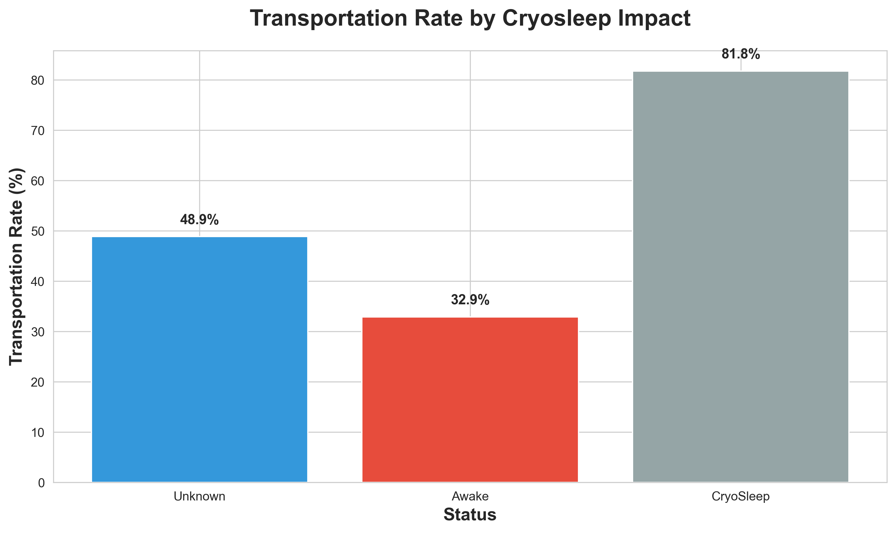
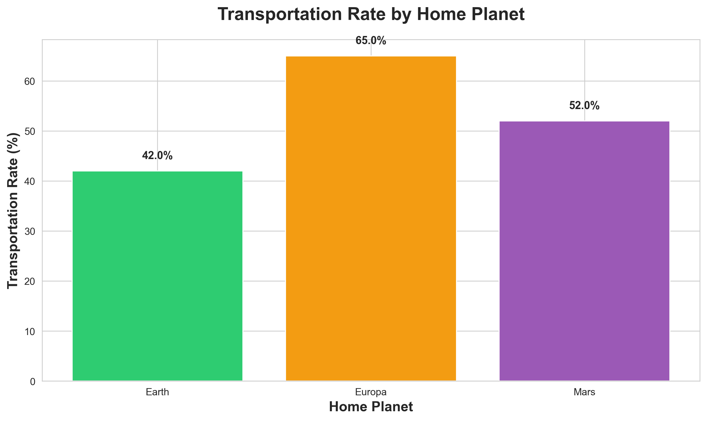
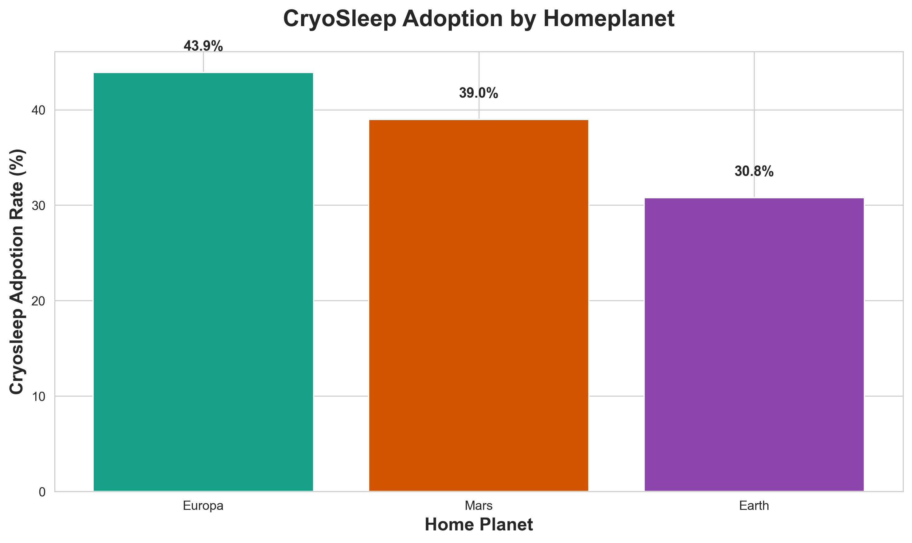
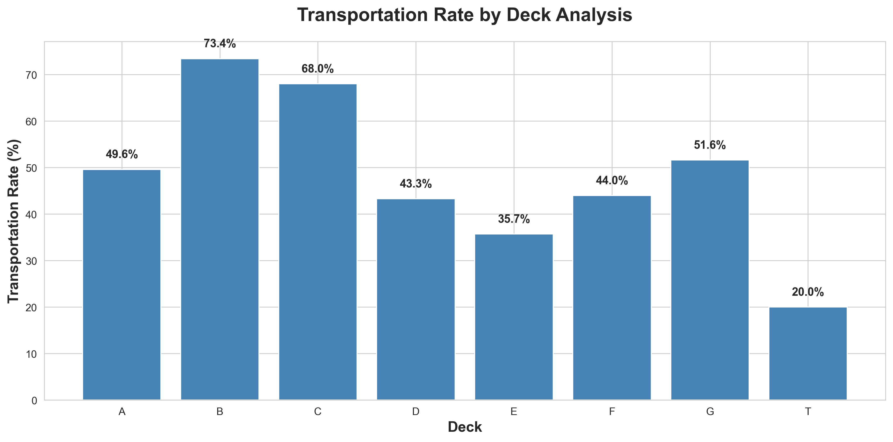
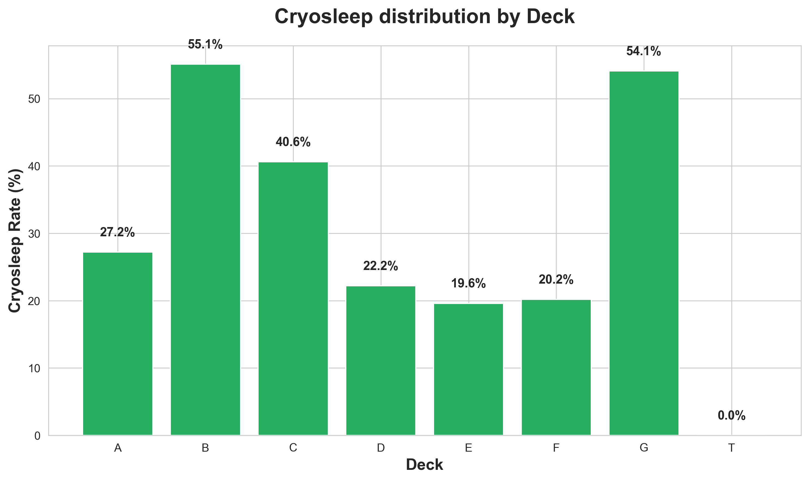
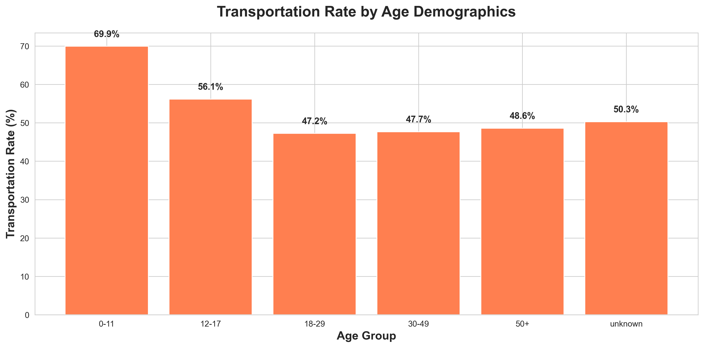
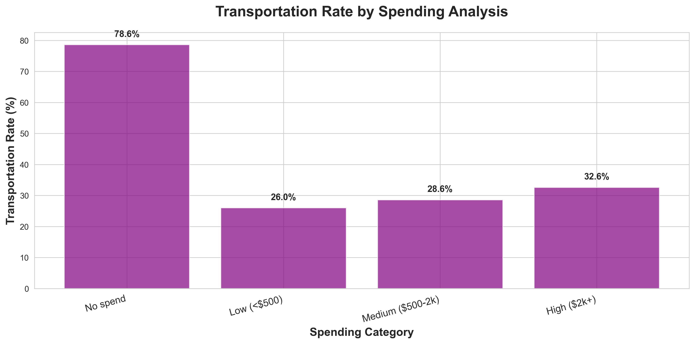
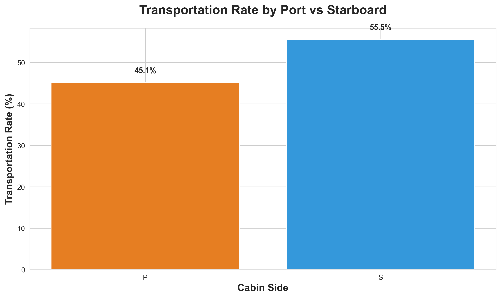
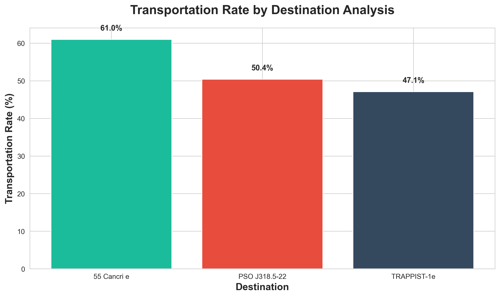

⚡ TL;DR
CryoSleep saved you — 82% transported vs 33% awake.
Every “pattern” (planet, deck, spending, destination) traced back to CryoSleep adoption.
One exception: Starboard side had a 10% directional advantage — independent of CryoSleep.
🧩 Setup
Year 2912. Spaceship Titanic carrying 8,693 passengers hits a spacetime anomaly. Half the ship gets transported to another dimension. We have the manifest — time to decode the pattern.
- Dataset: Kaggle Spaceship Titanic (training set)
- Tools: PostgreSQL + Python
- Goal: Find what predicted transportation
🧰 Method Overview
| Stage | Tool | Purpose |
|---|---|---|
| Data loading | PostgreSQL | Schema & safe imports |
| Cleaning | SQL scripts | Type casting, feature engineering |
| Analysis | SQL | Aggregations & correlations |
| Visualization | Python (matplotlib/seaborn) | Charts & validation |
🧊 CryoSleep Dominates Everything
CryoSleep passengers were 2.5× more likely to be transported — strongest variable in the data.
🌍 Europa’s Advantage (or not)
Europa’s 65% transport rate wasn’t biological — it came from higher CryoSleep usage.
🛌 Deck Differences
Deck B had a 73% transport rate, but Deck G (same CryoSleep rate) only 52%. Location mattered.
👶 Kids Had Higher Transport Rates
Kids (0–11) had a 70% transport rate — likely prioritized for CryoSleep.
💸 Spending Didn’t Matter
Spending = activity indicator. Awake passengers using amenities were most exposed.
⚖️ The Starboard Mystery
Starboard side: 10-point survival advantage. The only true independent signal.
🪐 Destination Effects
Longer trips → more CryoSleep → higher transport rates. Distance reinforced the main effect.
🧠 What We Learned
- CryoSleep = 82% survival, Awake = 33%
- Planet/Deck/Destination effects vanish once CryoSleep is controlled
- Starboard side remains independently significant
🧾 Bottom Line
If you were in CryoSleep, you vanished.
If you were awake in the spa, you stayed.
The rest were shadows of CryoSleep usage — and the port side’s still cursed.